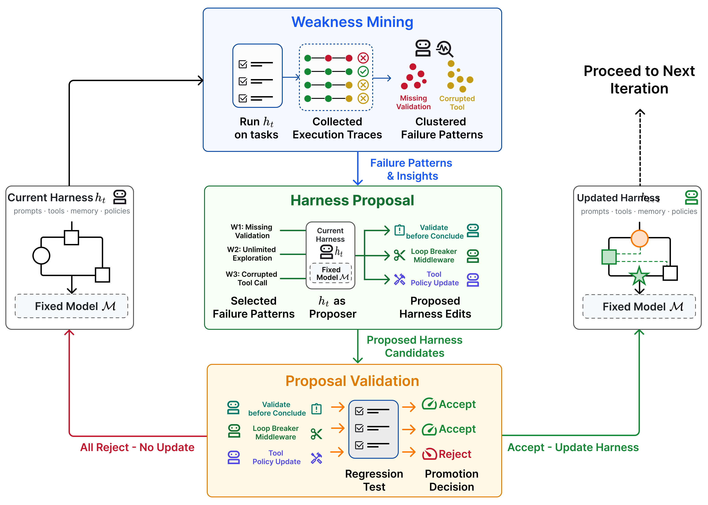

Section 6 deeper explanation
Preliminary
This section defines the central object of the paper: a “harness,” meaning the non-parameteric scaffolding around a fixed language model when it is used as an agent. The harness includes prompts, tool access, memory, and state handling, and it controls the execution protocol: how the model sees a task, chooses actions, calls tools, checks intermediate results, and returns an answer. The key distinction is that the model weights do not change. Instead, improvement happens by editing the harness itself. Formally, the paper fixes a model `M` and evaluator `E`, then studies a sequence of harnesses `h_0, h_1, ..., h_T`, where each step is a bounded modification to the agent’s control logic.
The algorithmic design makes this concrete. At each round, the current harness is evaluated on a held-in split and a held-out split, producing performance scores and an execution trace. The trace is then turned into an evidence bundle, but only from held-in failures that are grounded in verifier signals, so the proposal process is driven by concrete mistakes rather than vague suggestions. The model then generates `K` parallel edit proposals. Each candidate harness is evaluated again, and an edit is accepted only if it does not hurt held-in performance, does not hurt held-out performance, and strictly improves the combined criterion. This conservative acceptance rule is important: it prevents the system from overfitting to one split or accepting changes that trade one metric for another in an uncontrolled way.
If no proposal survives, the harness stays unchanged; otherwise, the accepted edits are merged into the next harness. The result is an iterative search over harness design, not a one-shot rewrite. This sets up the next part of the paper, which can focus on how candidate edits are generated, how evidence is packaged, and how the acceptance criterion yields a stable self-improvement loop.
